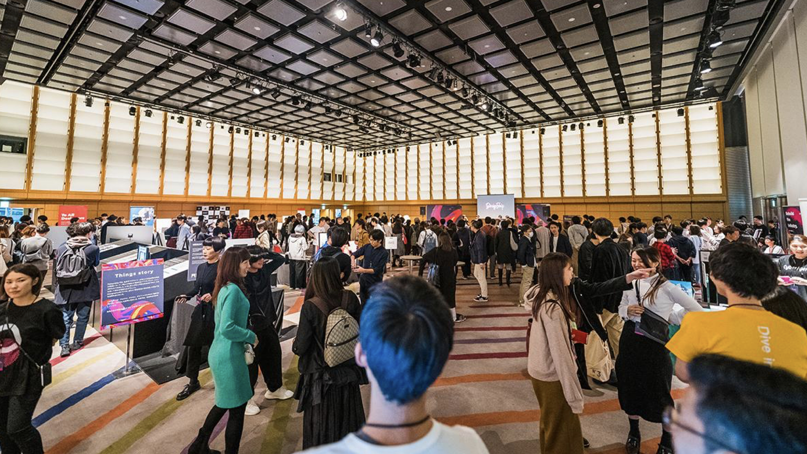
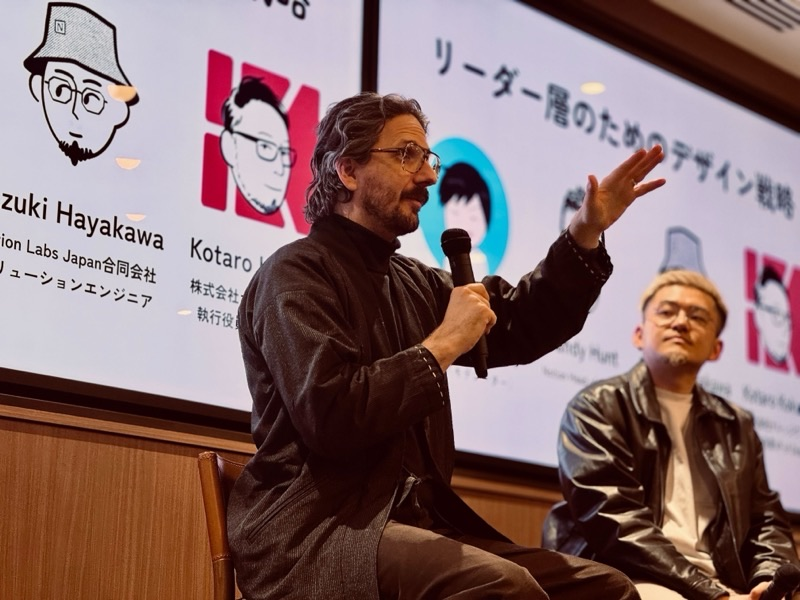
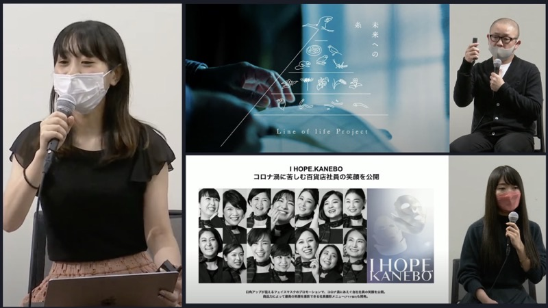
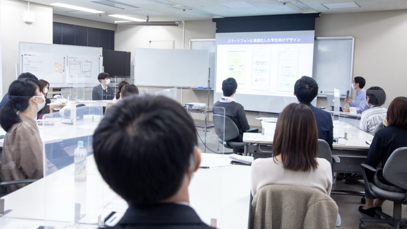
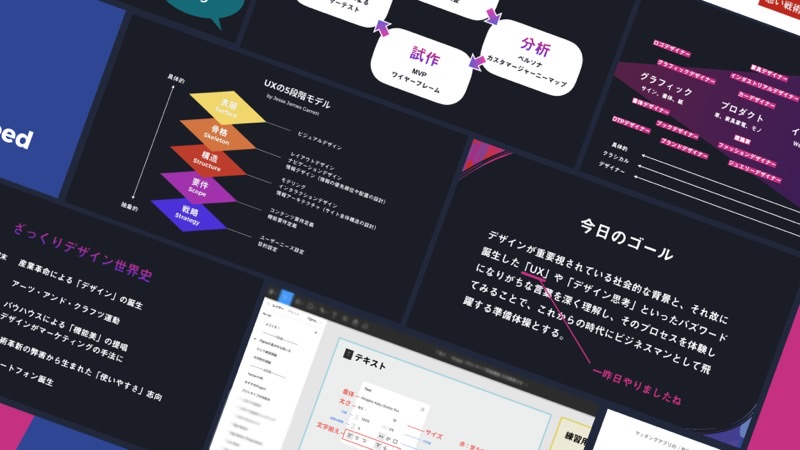
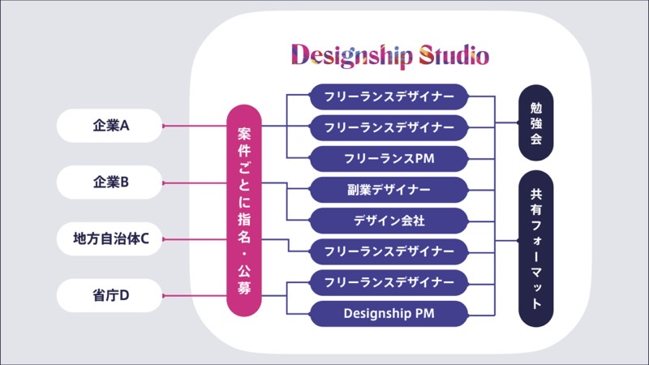
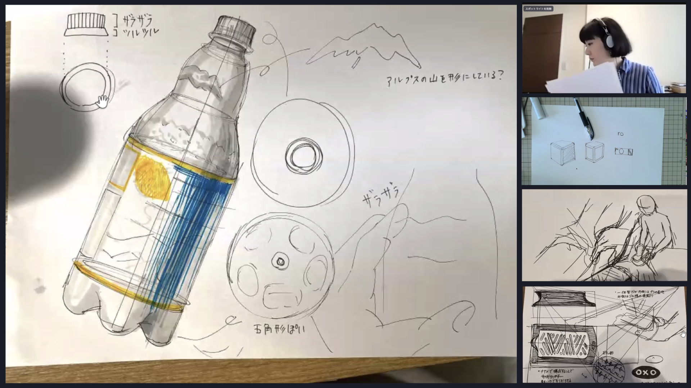
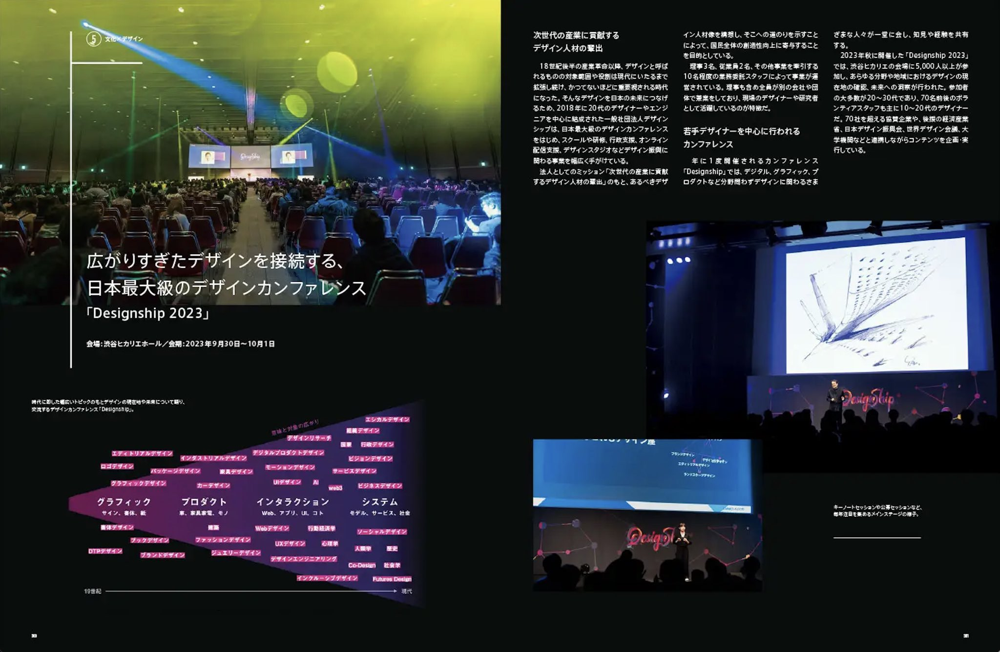

運営事業
デザインを軸にした10の事業を展開しています。

カンファレンス運営
2018年より毎年開催する日本最大級のデザインカンファレンス「Designship」。最前線で活躍するデザイナーが登壇し、デザインの現在と未来を共有する年に一度の祭典。
カンファレンス運営の詳細をみる →
ハッカソン運営
高校生から社会人まで、デザインとテクノロジーの力で社会課題に挑む「Hack-1グランプリ」を運営。東京大学をはじめ全国の会場で開催。
Hack-1グランプリ
イベント企画支援
Tokyo Midtown DESIGN TOUCH、世界デザイン会議東京2023など、大規模デザインイベントの企画・運営を支援。コンセプト設計からプログラム構成、当日運営まで一気通貫でサポート。
イベント企画支援の詳細をみる →
イベント配信支援
カンファレンス運営で培った高品質なオンライン配信技術を提供。Goodpatch、弁護士ドットコム、日本デザイン振興会など多数の配信実績。
イベント配信支援の詳細をみる →
トーク番組
グッドデザイン賞とのコラボレーションによるトーク番組「Dialogue」。デザインの深層に迫る対話を通じて、新たな視座を提供。
Dialogue
行政支援
行政機関のデザイン導入を支援。東京都港区「区民にわかりやすい情報発信 デザイン研修」、東京都狛江市「デザイン作成入門研修」など多数の実績。
行政支援の詳細をみる →
デザイン研修
デザイン基礎研修、デザイン思考ワークショップ、UXデザイン研修、サービスデザイン研修など。多摩美術大学、日本郵便、日立製作所、RINNAI等の実績。
お問い合わせ
デザインスタジオ
案件ごとに最適なフリーランスデザイナー・PMをアサインするオープン型デザインスタジオ「Designship Studio」。勉強会や共有フォーマットでチームの質を担保。
Designship Studio
デザインスクール
「Design × Business × Leadership」をテーマにした実戦型デザインスクール「Designship Do」。経済産業省の提唱する「高度デザイン人材」の育成を目的とした教育プログラム。
Designship Do
デザイン振興
経済産業省関連事業への協力やデザインに関する調査・研究など、デザインの社会的価値を広める活動を推進。
デザイン振興の詳細をみる →